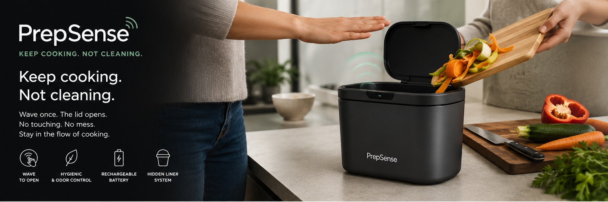
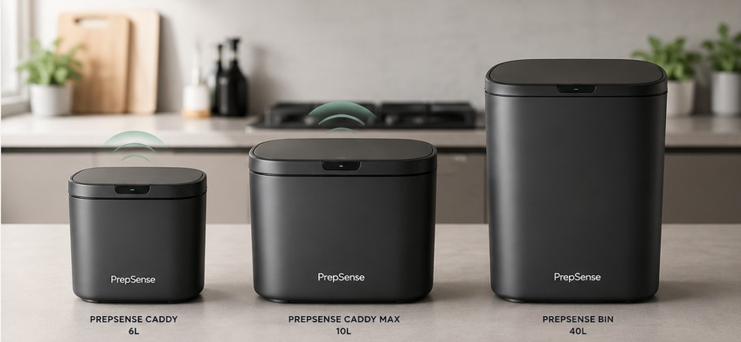

Keep cooking. Not cleaning.

Whether you're peeling vegetables, trimming meat or preparing ingredients, PrepSense opens with a simple wave of your hand.
No touching. No interruptions. No unnecessary hand washing.
Touch-free convenience while cooking.
Works with standard compostable caddy liners.
Integrated carbon filter system.
No disposable batteries required.
